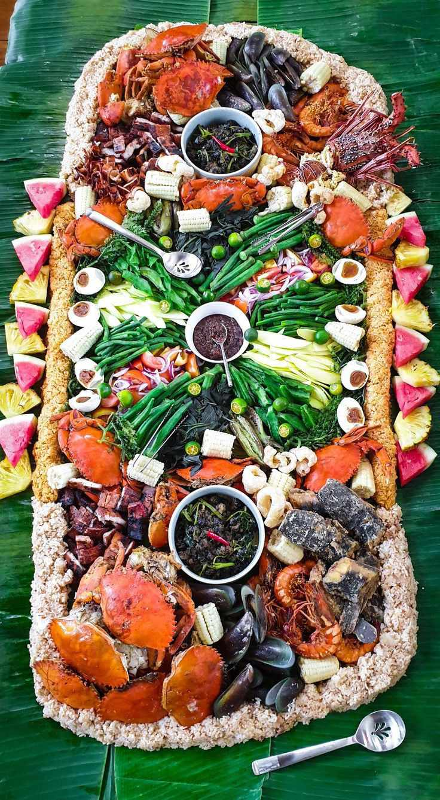
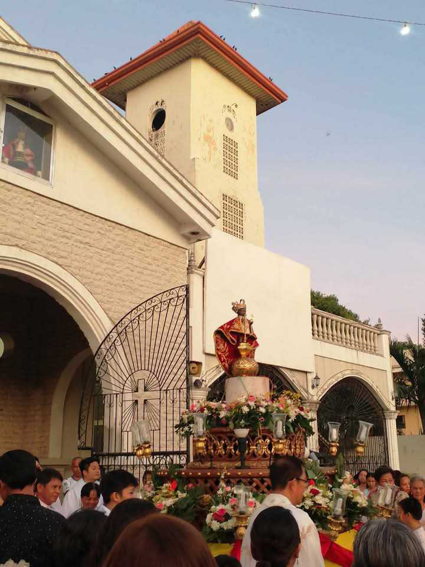

Christine Rosalejos
Medellin's cultures revollces around it's agricultural and coastal heritage.
reffered as the Sugar Bowl of Cebu due to it's vast sugarcane plantations.
locals enjoys the relaxed coastal life , celebrating Katuban Festival with colorful parades and feast
highlighting their love for music ,food and their thanks to the nountiful harvest season on May.
An annual celebration in Medellin, Cebu , held every April 27 in the honr of the Santo Nino Child (Child Jesus). The term "Katbuhan" transaltes to "sugarcane pantation" in cebuano orginating from the word "tubo" meaning sugarcane. The festival serves
as a thanksgiving for the bountiful harvest of the sugarcane plantations in the town. The festival is also a way of showcasing the rich cultural heritage of the town and the people's way of life.

Medellin, Cebu, is home to several barangays, each with its own unique fiesta celebrations that reflect the rich cultural heritage and deep-rooted traditions of the community..
known for their warm and welcoming nature, embodying the true essence of Filipino hospitality.
They have a strong sense of community and are deeply rooted in their agricultural and coastal lifestyle,

Highlighting the north part of Cebu featuring its agricultural scenery is complemented by pristine beaches along its coastal barangays, offering crystal-clear waters and white sandy shores.
The town features rolling hills, mangrove forests, and scenic spots like Gibitngil Island (also known as Funtastic Island)

The majority of the people in Medellin, Cebu, are Roman Catholic, reflecting the strong influence of Spanish colonization in the Philippines.
Their religious devotion is evident in their celebrations of fiestas honoring patron saints, such as the Santo Niño during the Katubhan Festival. Religious activities, including processions, novenas, and masses, play a central role in community life.
Being a coastal municipality, Medellin is known for its fresh seafood, including grilled fish, shrimps, crabs, and squid. Kinilaw (ceviche) is a popular dish,
often prepared with freshly caught fish marinated in vinegar, spices, and coconut milk.